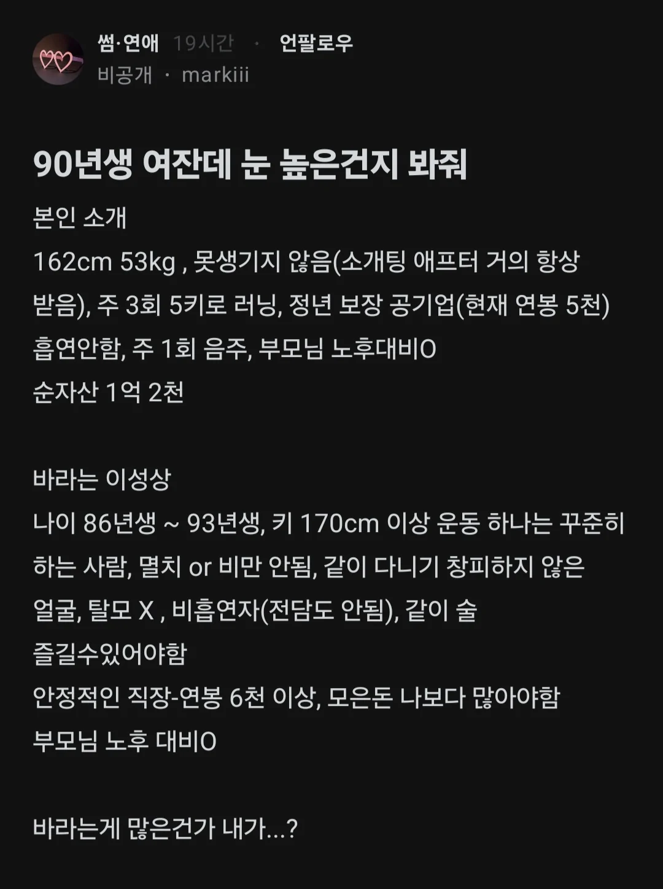
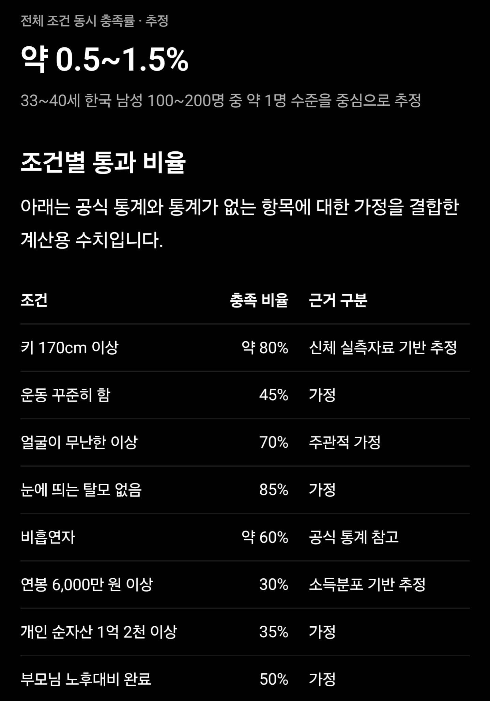

상위 0.5% ~ 1.5%
33세~40세 남성이
미혼에 여친 없을 비율은 가정안한 수치


상위 0.5% ~ 1.5%
33세~40세 남성이
미혼에 여친 없을 비율은 가정안한 수치
여자 나이가 많긴 한데, 남자도 30후반~40초반이잖아. 그럼 그 나이대 저조건의 남자는 누구 만나야됨 ㅋㅋ? 20대 만나려고 하면 영포티 ㅇㅈㄹ 할거같은데.
눈높은거 아냐
저래놓고 저기에 맞는 사람 나타나면
저거보다 한가지는 빠진 필받는 남자랑 결혼해.
나이가 있어서 한가지 빠지는걸로 안될듯
기다리다보면 괜찮은 남자 있겠지 계속 기다려보는것도 나쁘지 않을듯ㅋㅋ
남자를 만나는게 먼저일지 정신차리는게 먼저일지ㅋㅋ
현실을 모르나..
옛날같앴으면 상폐녀라고 빼애액했을텐데 개붕이들 나이 많이먹었다
조건 조건 조건
머 이 세상에 사랑은 없는듯
인터넷상에서만 이러길
30넘어가면 조건보게 되는듯 조건없이 순애결혼하려면 20대에 결혼해야해
근데 조건없는 사랑이라는것도 허상 아니냐? 10대~20대 때의 풋풋한 연애라고 해도 카테고리가 다른거지 조건을 안본건 아니잖아.
순수 외형/성격만 보니까 사람 자체를 보는거지 배경을 보는 건 아니라서 그런 긋
저걸 다 곱하네ㅋㅋㅋ
많이들 뭐라고 하네 괜찮은거 같은데
87년생 키184에 술담배안하고 중소기업 사장이라 저기 조건 한참 오버
10년전에 돈없이 결혼했는데 와이프 뒷바라지로 성공해서 이 자리까지 옴
완성된 사람을 찾으려니 어려운거임
공기업인데 5천은 뭐임? 청소부도 그것보다는 더받겠다
청소부 5천 주는곳 있으면 소개해줘 내가 좀 하게
공기업도 그렇게 많이 주지않음
특히 붙박이인 지방공기업들은 더 그래
아예 전국순환하는곳들이나 좀 더 주지
저 조건 다 맞는 사람 데려놔도 잘 안됨. 남자가 적극적이지 않다고
만날수있는데 여자가 발품팔아야지 저나이면 결혼정보회사하나가지고는안됨 모임뚫던가
엄청나게 고스펙의 남자를 원하는게 맞긴한디 자기 스펙이 진짜라면 나쁘지않게 찾는거같은디?
우리와이프는 항상 60억분의 1이라고 교육한다.
자기 스펙이랑 비슷하게 구하는거 같은데
저걸 다 합치면 개높은게 맞지
비교적 실험레벨급 정량화 가능한 비흡연 키 연봉 탈모, 자산 , 노후 이거만해도 상위 10% 가네
저 조건 다 충족되도 성격이 안맞으면 끝이잖아
무난한거같은데. 내 친구들은 대부분 해당될듯
저거보다 안되는 나도 5살 연하랑 결혼했음
저 분이 바라는 게 높다고는 생각 안하는데
남녀간의 니즈 차이 때문에 실제로 결혼까지 이어지기는 쉽지않을듯
근데 다 진짜 무난한데 조건들...
일단 마지막 조건
부모님 노후대비완료
-->여기서 좀 넉넉한 형편일거라는게 짐작되는데
보통 그러면 아들 키170은 무난하게 넘지..
형편이 넉넉하니 자녀교육에도 어느정도 신경쓰고
투자했을 가능성이 높으니
나름 고연봉(?)일 확률도 높고...
그리고 흙수저처럼 집안에 돈빨릴 확률도 적으니
30대후반이면 자산1억2천 모아놧을 확률도 높지
(20대후반부터 1년1천만원 10년 모으면 1억임)
다 전혀서로 상관없는 독립변수가 아니구
어느정도 연관있는 요인들이라
글에서 곱연산으로 나온상위1프로까진 아닌듯
저정도면 눈이 높은게 아니라
결심이 늦은거지
20후반이나 30초에 저렇게 비슷한 조건으로 원했으면
같은 공기업에서도 충분히 매칭될만한데
지금이면 대부분 결혼했지
저 나이대로 저조건에 남아있는사람이면 성격에 하자 크거나 갔다왔거나 아님?
이게 매매혼이지 뭐가 매매혼임? 사랑 없는 결혼을 도대체 왜 하는 거지
근대 부모님 노후 대비가 50%나 되는거야?
여자 조건도 나이만 떼고 보면 괜찮긴한데 저 조건의 남자가 뭐하러 노괴를 만나야하는지